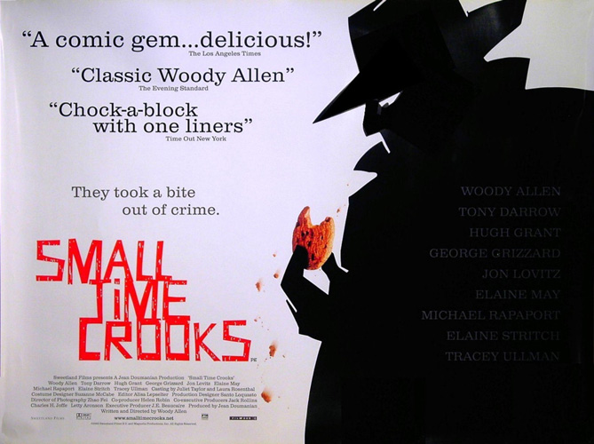
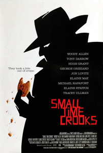
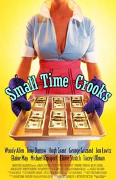

|
||||
Small Time Crooks (2000) |
||||
 |
||||
Director |
- |
Woody Allen | ||
Producers |
- |
Letty Aronson Helen Robin J.E. Beaucaire Jean Doumanian Charles H. Joffe Jack Rollins |
||
Screenplay |
- |
Woody Allen |
||
Cinematography |
- |
Zhao Fei | ||
Production Designer |
- |
Santo Loquasto | ||
Costume Designer |
- |
Suzanne McCabe | ||
Editor |
- |
Alisa Lepselter | ||
Cast |
||||
Ray Winkler |
- |
Woody Allen | ||
Frances "Frenchy" Fox-Winkler |
- |
Tracey Ullman | ||
May Sloane |
- |
Elaine May | ||
Chi-Chi Velasquez Potter |
- |
Elaine Stritch | ||
David Perrette |
- |
Hugh Grant | ||
Denny Doyle |
- |
Michael Rapaport | ||
Tommy Walker |
- |
Tony Darrow | ||
Benjamin "Benny" Bukowski |
- |
Jon Lovitz | ||
Officer Ken DeLoach |
- |
Brian Markinson | ||
George Blint |
- |
George Grizzard | ||
Charles Bailey |
- |
Larry Pine | ||
Emily Bailey |
- |
Kristine Nielsen | ||
Plot |
||||
Career criminal Ray (Woody Allen) and his cronies want to lease a closed pizzeria so they can dig a tunnel from the basement of the restaurant to a nearby bank. Ray's wife Frenchy (Tracey Ullman) covers what they are doing by selling cookies in the restaurant. The robbery scheme soon proves to be a miserable failure, but, after they franchise the business, selling cookies makes them millionaires. In the film's second act, Frenchy throws a big party and overhears people making fun of their poor decorating taste and lack of culture. She asks an art dealer named David (Hugh Grant) to train her and Ray so they can fit in with the American upper class. Ray hates every minute of it, but Frenchy likes their new culture. What Frenchy does not know is that David is really just using her to finance his art projects. Ray finally gets fed up and leaves Frenchy. David and Frenchy go to Europe for more cultural enlightenment and while there, she gets a call and finds out she has been defrauded by her accountants. She's lost everything including her cookie company, home, and possessions. David turns on her right away and immediately dumps her. Meanwhile, Ray has gone back to being a crook and tries to steal a valuable necklace at a party. He has had a duplicate made and through a series of circumstances gets the duplicate and real one mixed up. At the party, he finds out that Frenchy is broke, so he leaves and goes to see her. He consoles her by saying he stole the valuable necklace and shows it to her. Her new-found cultural enlightenment enables her to tell the necklace is a fake; Ray has gotten the wrong one. But she produces a very expensive cigarette case that she once had given to David as a gift but stole back after he dumped her. It once belonged to the Duke of Windsor. They reconcile, decide to sell it and retire to Florida. |
||||
Filming |
||||
The film has the same plot as Larceny, Inc. (1942), with Edward G. Robinson. Instead of a luggage store, the setting is a bakery. The film contains several references to Sir Arthur Conan Doyle's short story The Red-Headed League, including the plot to break into a bank through the basement of an adjacent storefront and Frenchy's attempt memorize the contents of the dictionary. Woody Allen places a large gumball machine in one of the opening scenes to create a link between his character, Winkler, and fellow inept criminal Virgil Starkwell from his other film Take the Money And Run (1969). The quote, "The only thing missing from this guy is a piece of velvet and a pet mouse...", is a reference to Of Mice and Men by John Steinbeck. In the beginning of the film, Allen's character Ray wants to rent a storefront next to the bank, only to learn that someone by the name of "Nettie Goldberg" has already leased it. Nettie was Allen's real life mother's name. Woody Allen claims he cast Tracey Ullman because she is one of the few comedians that makes him laugh. In one scene, serial killer Ted Bundy is mentioned. The next scene features veteran character-actor George Grizzard, who had played author Richard Larsen in The Deliberate Stranger: a television biopic about Ted Bundy. |
||||
Filming Locations |
||||
- Doyers Street, Manhattan, New York City (Chinatown); - Mott Street, Manhattan, New York City (Between Houston and Prince); - Riverbank State Park, 679 Riverside Drive, Manhattan, New York City, New York; - Shea Stadium, 12301 Roosevelt Avenue, Flushing Meadows Park, Queens, New York City. |
||||
Quotes |
||||
"It was a really tragic story, because my husband, Otto, was dyslexic, and the only thing he could spell correctly was his name." Denny: "Ray really is a genius, Frenchy." |
||||
Music |
||||
With Plenty of Money and You |
- |
Hal Kemp | ||
Could It Be |
- |
Stephen Lang | ||
Stompin' at the Savoy |
- |
Benny Goodman & His Orchestra | ||
Music Makers |
- |
Harry James | ||
Johann Strauss - Voices of Spring Waltz |
- |
The Vienna State Opera Orchestra | ||
Cocktails for Two |
- |
Carmen Cavallaro | ||
Tequila |
- |
The Champs | ||
The Modern Dance |
- |
Judith Cohn, Carol Genetti & Scott Marshall | ||
Sergei Rachmaninoff - Prelude in B minor op. 32 |
- |
Ruth Laredo | ||
Fascination |
- |
Carmen Cavallaro | ||
Mountain Greenery |
- |
Lester Lanin | ||
Zelda's Theme |
- |
Pérez Prado | ||
J.S. Bach - Sarabande for solo 'cello in D Minor |
- |
Jesse Levy | ||
Lester Lanin Cha-Cha |
- |
Lester Lanin | ||
This Could Be the Start of Something Big |
- |
Lester Lanin | ||
Just in Time |
- |
Lester Lanin | ||
Old Devil Moon |
- |
Lester Lanin | ||
The Hukilau Song |
- |
Lester Lanin | ||
Steady, Steady |
- |
Lester Lanin |
||
Reviews |
||||
"This is an amiable and quite conventional comedy. The biggest problem is that it's not all that funny. The whole movie, with its rather antiquated notions of the lower classes, feels as if it were inspired by another era." - David Ansen : Newsweek "Tracey Ullman is Allen's best on-screen match since Diane Keaton in Annie Hall; smart, funny, a fully-developed character." - Jeffrey Overstreet : Looking Closer |
||||
Additional Artwork |
||||
  |
||||